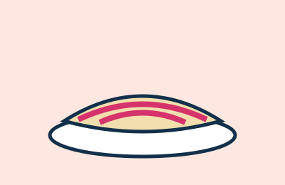

Tapioca
Goma de mandioca hidratada e feita na chapa. Aceita recheios doces, como coco, e salgados, como queijo coalho.
A cozinha do Recife mistura influência indígena, africana e portuguesa.
Goma de mandioca hidratada e feita na chapa. Aceita recheios doces, como coco, e salgados, como queijo coalho.

Massa finíssima enrolada com goiabada. É a sobremesa mais associada a Pernambuco.
Caldo cremoso de feijão, camarão ou sururu, servido em copo nos bares da praia.